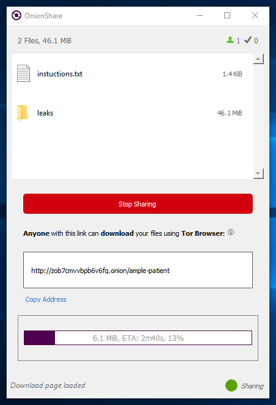

OnionShare has some exciting new features
It’s been some time since I’ve written about OnionShare, so I thought I’d write an update on all of the latest work. Today we released version 1.3 (and last month we released 1.2, so the releases are getting more frequent). You can get the latest version at onionshare.org.
But first, I owe a huge thanks to Miguel Jacq for churning out new features, taking over a lot of the GitHub issue triaging responsibilities, and becoming a core OnionShare developer.
If you haven’t tried it out in awhile, here are some things that are new:
The user interface has a major upgrade. It’s now much more clear exactly what steps you’re supposed to take at every point, and it looks a bit more like a modern piece of software. In addition to the OnionShare interface getting redesigned, the client-side web interface — what people receiving the files with Tor Browser see — also has a new look:
(That’s Tor Browser running in a disposable Whonix AppVM in Qubes, by the way.)
I owe a huge thanks to Glenn Sorrentino for, nine months ago, doing a formal user study of OnionShare users and designing a brand new user experience that only now, in version 1.3, is seeing the light of day. Glenn also redesigned the onionshare.org website!
OnionShare now bundles a copy of Tor with it (and has since May 2017), which means there’s no need to have Tor Browser open in the background anymore. Instead, OnionShare connects to Tor itself.
Because OnionShare can now control its own Tor process, it’s now also possible for censored users in countries like China to connect to the Tor network using bridges, from within OnionShare. Bridge support was first added last month, and support for meek bridges was added to 1.3 (for Linux only at the moment).
Here’s more information about how to connect to Tor, and using bridges, in OnionShare.
Another recent feature is the auto-stop timer. Already, OnionShare will stop the share as soon as the first download finishes (you can disable this in the settings if you want to send files to multiple people). But now, if the receiver doesn’t download the file after a specified amount of time, OnionShare will automatically stop sharing for you. For example, here I’m sharing a screenshot, but the share will automatically stop at 2pm:
Once you start the share, you can see a countdown of seconds remaining before it stops on its own. (If the receiver starts downloading before that countdown finishes though, they’ll be able to finish downloading all the files no matter how long the download takes.)
Here’s more information about using the auto-stop timer.
Another feature is persistent OnionShare addresses. By default, every time you share something, OnionShare generates a brand new URL, and soon as you’re done sharing it that URL no longer exists, and never will exist again. But now, you can change a setting that will allow you to re-use the same OnionShare URL for multiple shares.
This might come in handy in any situation where you want to send someone files, but you don’t want to have any online communication channel with them. For example, let’s say a whistleblower (Alice) meets a journalist (Bob) in person. Alice can hand Bob a piece of paper with an OnionShare address on it and tell him to check it every night at a specific time. Now, Alice can continually anonymously send files to Bob without needing to communicate new OnionShare addresses every time. Here’s more information about persistent addresses.
Another advanced feature that’s been added is support for stealth, or authenticated, onion services. These are Tor onion services that are much more private, but are also harder to use. The sender needs to share both the OnionShare address but also a HidServAuth string, and the receiver needs to add this HidServAuth string to their torrc file before they’ll be able to connect to it. (This is why it’s an advanced feature, it’s not quite practical for beginners to do this without a lot of troubleshooting.) Here’s more information about using stealth onions in OnionShare.
On a similar note, you might be wondering about OnionShare support for next generation Tor onion services, which are more secure and private than existing onion services. There is an open issue for this, but currently it’s blocked until an upstream project that OnionShare relies on, stem, adds support for ephemeral next gen onion services itself. However, the OnionShare website itself is now accessible using a next gen onion service, and OnionShare will load it to check for available updates:
http://lldan5gahapx5k7iafb3s4ikijc4ni7gx5iywdflkba5y2ezyg6sjgyd.onion/
I’ve described some of the newest and biggest features in OnionShare, but it’s not nearly an exhaustive list. There are many more, including a system tray icon with desktop notifications, the ability to cancel shares before they finish starting, translations into several languages, checking for updates automatically, among others. Oh, and since January 2017, OnionShare has been built-in to the Tails operating system too!
I’m striving to make OnionShare a contributor-friendly open source project. Pull requests are always welcome, and in fact 51 different people have already contributed code.
If you’d like to get involved in OnionShare development:
- Read the Developing OnionShare page on the wiki
- Join the new (and so far extremely low-traffic) mailing list for OnionShare developers and designers
- Checkout the GitHub issues page for bugs or enhancements to work on, or open your own issues if there are features you’d like to develop


Legacy comments, imported from previous version of this blog:
1010100101
March 2, 2018 08:09 AM
Great work Micah! OnionShare is really to go to for me now when it comes to sharing files.
If only now someone may be able to work on a fork of it that is based on i2pd :)